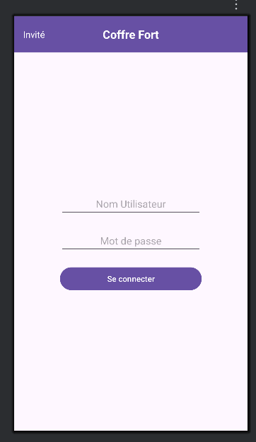
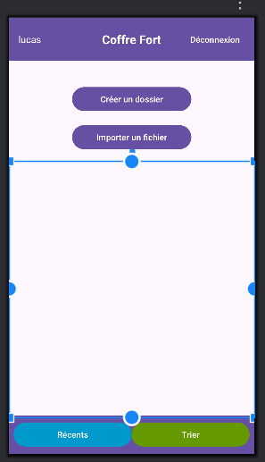

Le projet consiste à développer une application Android permettant à l’utilisateur d’accéder à un espace de stockage local, d’y gérer ses fichiers
confidentiels et d’afficher les documents récemment téléchargés. L’application offre également des fonctionnalités d’organisation, comme la visualisation
des fichiers récents et le tri par catégories.

L’objectif principal est de concevoir une interface simple, intuitive et fonctionnelle permettant à l’utilisateur de naviguer facilement dans ses fichiers.
Le projet vise aussi à comprendre et à mettre en pratique les bases du développement Android : création d’activités, gestion des permissions, affichage
d’éléments dynamiques, utilisation de RecyclerView et interaction avec le système de fichiers. Et j'ai aussi dû mettre en place un système d'authentification
pour que les fichiers soient privés et sécurisés

Pour réaliser ce projet, plusieurs étapes ont été nécessaires la première est la création de l’interface principale avec des boutons permettant
d’accéder aux documents et aux fonctionnalités additionnelles. La mise en place d’une zone dédiée à l’affichage des fichiers téléchargés. Ajout d’une
barre inférieure contenant deux boutons : l’un pour afficher les dossiers récents et l’autre pour trier les fichiers par catégorie. Et pour but
l'intégration de la logique permettant de récupérer les fichiers du dossier Documents et de les afficher dynamiquement à l’écran. Tout en développement
d’un système simple de tri et de filtrage.
Le résultat final est une application fonctionnelle permettant à l’utilisateur de consulter ses documents et d’interagir avec eux rapidement. L’interface
permet de visualiser clairement les fichiers récents, de trier le contenu et d’explorer les documents du téléphone à travers une présentation simple.
Ce projet m’a permis de mieux comprendre le fonctionnement d’Android Studio, la gestion des fichiers et la création d’interfaces adaptées aux besoins de
l’utilisateur.